F01 노을 · 레드 · 동백꽃 A · 진홍
BG01 · LT01
ML_BG01_LT01_F01_Camellia_Crimson_A_BudToBloom_Key00FFFF_Review_v30.mp4
자연 개화·라이팅 최종 승인 전
v32 · 배경별 폴더 4개 · 같은 BG/LT ID의 꽃·잎·풀·돌·배경요소를 사용합니다. 신규 생성/색 보정 없이 원본을 보존한 정리본입니다.
라이팅 기준은 기존 제작 기록에서 확인했습니다. 실제 Unity 라이팅 정합과 자연 개화의 최종 승인은 전 세트 미완료입니다. F05 금잔화 A 영상은 키 배경 불합격입니다.
꽃·배경·라이팅 대응표 CSV · 16편 개화·배경 연결 검토 페이지
아래 꽃 이미지는 원본 알파 PNG의 축소 미리보기입니다. 원본 172개는 로컬의 20261022_메이즈랜드_원본소스/Unity_라이팅세트_v32 폴더에 있습니다.
왼쪽 낮은 주황·앰버빛 / 보라·푸른 그림자
폴더: BG01_Sunset_LT01_AmberLeft
통합 유화 · 라이팅 기준 이미지
배경 파일: ML_BG01_LT01_Background_Hallasan_4096_v19.png
BG01 · LT01
ML_BG01_LT01_F01_Camellia_Crimson_A_BudToBloom_Key00FFFF_Review_v30.mp4
자연 개화·라이팅 최종 승인 전
BG01 · LT01
ML_BG01_LT01_F02_Camellia_Red_B_BudToBloom_Key00FFFF_Review_v29.mp4
자연 개화·라이팅 최종 승인 전
BG01 · LT01
ML_BG01_LT01_F03_Buckwheat_RedPink_A_BudToBloom_Key00FFFF_Review_v30.mp4
자연 개화·라이팅 최종 승인 전
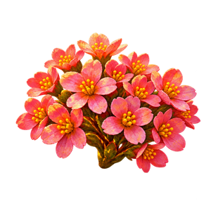
BG01 · LT01
ML_BG01_LT01_F04_Buckwheat_RedPink_B_BudToBloom_Key00FFFF_Review_v29.mp4
자연 개화·라이팅 최종 승인 전
| 요소 | 상태 | 파일명 |
|---|---|---|
| 노을 · 레드 · 배경만 | RuntimeBackground | ML_BG01_LT01_Background_Hallasan_4096_v19.png |
| 노을 · 레드 · 가로벽 배경 소스 | WallResolutionSource | ML_BG01_LT01_Background_Hallasan_Wall14165_v19.png |
| 노을 · 레드 · LightingReference | LightingReference | ML_BG01_LT01_Reference_IntegratedOil_v21.png |
| 노을 · 레드 · LayoutReferenceBloom | LayoutReferenceBloom | ML_BG01_LT01_Reference_ExhibitionBloom_v26.png |
| 노을 · 레드 · LayoutReferenceBud | LayoutReferenceBud | ML_BG01_LT01_Reference_ExhibitionBud_v26.png |
| 노을 · 레드 · 동백꽃 A · 진홍 · 실제 Bud 입력 | Bud | ML_BG01_LT01_F01_Camellia_Crimson_A_Bud_InputKey00FFFF_v22.png |
| 노을 · 레드 · 동백꽃 A · 진홍 · 원본 알파 Bud | Bud | ML_BG01_LT01_F01_Camellia_Crimson_A_Bud_SourceAlpha_v14.png |
| 노을 · 레드 · 동백꽃 A · 진홍 · 실제 Bloom 입력 | Bloom | ML_BG01_LT01_F01_Camellia_Crimson_A_Bloom_InputKey00FFFF_v23.png |
| 노을 · 레드 · 동백꽃 A · 진홍 · 원본 알파 Bloom | Bloom | ML_BG01_LT01_F01_Camellia_Crimson_A_Bloom_SourceAlpha_v23.png |
| 노을 · 레드 · 동백꽃 A · 진홍 · 개화 검토 영상 | BudToBloom | ML_BG01_LT01_F01_Camellia_Crimson_A_BudToBloom_Key00FFFF_Review_v30.mp4 |
| 노을 · 레드 · 동백꽃 B · 빨강 · 실제 Bud 입력 | Bud | ML_BG01_LT01_F02_Camellia_Red_B_Bud_InputKey00FFFF_v22.png |
| 노을 · 레드 · 동백꽃 B · 빨강 · 원본 알파 Bud | Bud | ML_BG01_LT01_F02_Camellia_Red_B_Bud_SourceAlpha_v14.png |
| 노을 · 레드 · 동백꽃 B · 빨강 · 실제 Bloom 입력 | Bloom | ML_BG01_LT01_F02_Camellia_Red_B_Bloom_InputKey00FFFF_v23.png |
| 노을 · 레드 · 동백꽃 B · 빨강 · 원본 알파 Bloom | Bloom | ML_BG01_LT01_F02_Camellia_Red_B_Bloom_SourceAlpha_v23.png |
| 노을 · 레드 · 동백꽃 B · 빨강 · 개화 검토 영상 | BudToBloom | ML_BG01_LT01_F02_Camellia_Red_B_BudToBloom_Key00FFFF_Review_v29.mp4 |
| 노을 · 레드 · 메밀꽃 A · 붉은 분홍 · 실제 Bud 입력 | Bud | ML_BG01_LT01_F03_Buckwheat_RedPink_A_Bud_InputKey00FFFF_v22.png |
| 노을 · 레드 · 메밀꽃 A · 붉은 분홍 · 원본 알파 Bud | Bud | ML_BG01_LT01_F03_Buckwheat_RedPink_A_Bud_SourceAlpha_v14.png |
| 노을 · 레드 · 메밀꽃 A · 붉은 분홍 · 실제 Bloom 입력 | Bloom | ML_BG01_LT01_F03_Buckwheat_RedPink_A_Bloom_InputKey00FFFF_v23.png |
| 노을 · 레드 · 메밀꽃 A · 붉은 분홍 · 원본 알파 Bloom | Bloom | ML_BG01_LT01_F03_Buckwheat_RedPink_A_Bloom_SourceAlpha_v23.png |
| 노을 · 레드 · 메밀꽃 A · 붉은 분홍 · 개화 검토 영상 | BudToBloom | ML_BG01_LT01_F03_Buckwheat_RedPink_A_BudToBloom_Key00FFFF_Review_v30.mp4 |
| 노을 · 레드 · 메밀꽃 B · 붉은 분홍 · 실제 Bud 입력 | Bud | ML_BG01_LT01_F04_Buckwheat_RedPink_B_Bud_InputKey00FFFF_v22.png |
| 노을 · 레드 · 메밀꽃 B · 붉은 분홍 · 원본 알파 Bud | Bud | ML_BG01_LT01_F04_Buckwheat_RedPink_B_Bud_SourceAlpha_v14.png |
| 노을 · 레드 · 메밀꽃 B · 붉은 분홍 · 실제 Bloom 입력 | Bloom | ML_BG01_LT01_F04_Buckwheat_RedPink_B_Bloom_InputKey00FFFF_v23.png |
| 노을 · 레드 · 메밀꽃 B · 붉은 분홍 · 원본 알파 Bloom | Bloom | ML_BG01_LT01_F04_Buckwheat_RedPink_B_Bloom_SourceAlpha_v23.png |
| 노을 · 레드 · 메밀꽃 B · 붉은 분홍 · 개화 검토 영상 | BudToBloom | ML_BG01_LT01_F04_Buckwheat_RedPink_B_BudToBloom_Key00FFFF_Review_v29.mp4 |
| 노을 · 레드 · 동백꽃 잎 | Static | ML_BG01_LT01_G01_Leaf_v14.png |
| 노을 · 레드 · 메밀꽃 잎 | Static | ML_BG01_LT01_G02_Leaf_v14.png |
| 노을 · 레드 · 메밀꽃 긴 잎줄기 | Static | ML_BG01_LT01_G03_StemLeaves_v14.png |
| 노을 · 레드 · 동백꽃 긴 잎줄기 | Static | ML_BG01_LT01_G04_StemLeaves_v14.png |
| 노을 · 레드 · 낮은 풀 | Static | ML_BG01_LT01_G05_Grass_v14.png |
| 노을 · 레드 · 긴 풀 | Static | ML_BG01_LT01_G06_Grass_v14.png |
| 노을 · 레드 · 현무암 1 | Static | ML_BG01_LT01_R01_Basalt_v14.png |
| 노을 · 레드 · 현무암 2 | Static | ML_BG01_LT01_R02_Basalt_v14.png |
| 노을 · 레드 · 현무암 3 | Static | ML_BG01_LT01_R03_Basalt_v14.png |
| 노을 · 레드 · 현무암 4 | Static | ML_BG01_LT01_R04_Basalt_v14.png |
| 노을 · 레드 · 큰 구름 | Static | ML_BG01_LT01_A01_Cloud_v23.png |
| 노을 · 레드 · 얇은 구름 | Static | ML_BG01_LT01_A02_Cloud_v23.png |
| 노을 · 레드 · 노랑 나비 | Static | ML_BG01_LT01_A03_Butterfly_v23.png |
| 노을 · 레드 · 파랑 나비 | Static | ML_BG01_LT01_A04_Butterfly_v23.png |
| 노을 · 레드 · 푸른 새 | Static | ML_BG01_LT01_A05_Bird_v23.png |
| 노을 · 레드 · 복숭아빛 새 | Static | ML_BG01_LT01_A06_Bird_v23.png |
| 노을 · 레드 · 추가 전경 grass | Static | ML_BG01_LT01_FG01_GrassPatch_v27.png |
| 노을 · 레드 · 추가 전경 rock | Static | ML_BG01_LT01_FG02_BasaltGrassPatch_v27.png |
왼쪽 위 밝은 아이보리 햇빛 / 하늘색 그림자
폴더: BG02_Day_LT02_IvoryUpperLeft
통합 유화 · 라이팅 기준 이미지
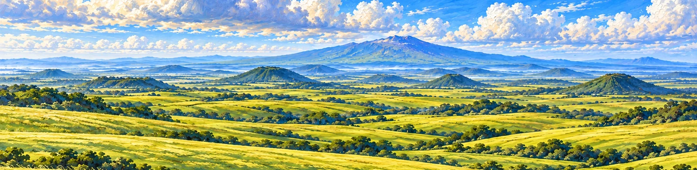
배경 파일: ML_BG02_LT02_Background_Hallasan_4096_v19.png
BG02 · LT02
ML_BG02_LT02_F05_Calendula_GoldYellow_A_BudToBloom_Key0000FF_RejectKey_v31.mp4
키 배경 불합격 · 사용 제외
BG02 · LT02
ML_BG02_LT02_F06_Calendula_GoldYellow_B_BudToBloom_Key0000FF_Review_v29.mp4
자연 개화·라이팅 최종 승인 전
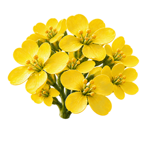
BG02 · LT02
ML_BG02_LT02_F07_Rapeseed_LemonYellow_A_BudToBloom_Key0000FF_Review_v30.mp4
자연 개화·라이팅 최종 승인 전
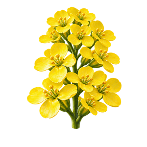
BG02 · LT02
ML_BG02_LT02_F08_Rapeseed_Yellow_B_BudToBloom_Key0000FF_Review_v29.mp4
자연 개화·라이팅 최종 승인 전
| 요소 | 상태 | 파일명 |
|---|---|---|
| 낮 · 옐로우 · 배경만 | RuntimeBackground | ML_BG02_LT02_Background_Hallasan_4096_v19.png |
| 낮 · 옐로우 · 가로벽 배경 소스 | WallResolutionSource | ML_BG02_LT02_Background_Hallasan_Wall14165_v19.png |
| 낮 · 옐로우 · LightingReference | LightingReference | ML_BG02_LT02_Reference_IntegratedOil_v21.png |
| 낮 · 옐로우 · LayoutReferenceBloom | LayoutReferenceBloom | ML_BG02_LT02_Reference_ExhibitionBloom_v26.png |
| 낮 · 옐로우 · LayoutReferenceBud | LayoutReferenceBud | ML_BG02_LT02_Reference_ExhibitionBud_v26.png |
| 낮 · 옐로우 · 금잔화 A · 황금노랑 · 실제 Bud 입력 | Bud | ML_BG02_LT02_F05_Calendula_GoldYellow_A_Bud_InputKey0000FF_v22.png |
| 낮 · 옐로우 · 금잔화 A · 황금노랑 · 원본 알파 Bud | Bud | ML_BG02_LT02_F05_Calendula_GoldYellow_A_Bud_SourceAlpha_v14.png |
| 낮 · 옐로우 · 금잔화 A · 황금노랑 · 실제 Bloom 입력 | Bloom | ML_BG02_LT02_F05_Calendula_GoldYellow_A_Bloom_InputKey0000FF_v22.png |
| 낮 · 옐로우 · 금잔화 A · 황금노랑 · 원본 알파 Bloom | Bloom | ML_BG02_LT02_F05_Calendula_GoldYellow_A_Bloom_SourceAlpha_v14.png |
| 낮 · 옐로우 · 금잔화 A · 황금노랑 · 개화 검토 영상 | BudToBloom | ML_BG02_LT02_F05_Calendula_GoldYellow_A_BudToBloom_Key0000FF_RejectKey_v31.mp4 |
| 낮 · 옐로우 · 금잔화 B · 황금노랑 · 실제 Bud 입력 | Bud | ML_BG02_LT02_F06_Calendula_GoldYellow_B_Bud_InputKey0000FF_v22.png |
| 낮 · 옐로우 · 금잔화 B · 황금노랑 · 원본 알파 Bud | Bud | ML_BG02_LT02_F06_Calendula_GoldYellow_B_Bud_SourceAlpha_v14.png |
| 낮 · 옐로우 · 금잔화 B · 황금노랑 · 실제 Bloom 입력 | Bloom | ML_BG02_LT02_F06_Calendula_GoldYellow_B_Bloom_InputKey0000FF_v22.png |
| 낮 · 옐로우 · 금잔화 B · 황금노랑 · 원본 알파 Bloom | Bloom | ML_BG02_LT02_F06_Calendula_GoldYellow_B_Bloom_SourceAlpha_v14.png |
| 낮 · 옐로우 · 금잔화 B · 황금노랑 · 개화 검토 영상 | BudToBloom | ML_BG02_LT02_F06_Calendula_GoldYellow_B_BudToBloom_Key0000FF_Review_v29.mp4 |
| 낮 · 옐로우 · 유채꽃 A · 레몬노랑 · 실제 Bud 입력 | Bud | ML_BG02_LT02_F07_Rapeseed_LemonYellow_A_Bud_InputKey0000FF_v22.png |
| 낮 · 옐로우 · 유채꽃 A · 레몬노랑 · 원본 알파 Bud | Bud | ML_BG02_LT02_F07_Rapeseed_LemonYellow_A_Bud_SourceAlpha_v14.png |
| 낮 · 옐로우 · 유채꽃 A · 레몬노랑 · 실제 Bloom 입력 | Bloom | ML_BG02_LT02_F07_Rapeseed_LemonYellow_A_Bloom_InputKey0000FF_v23.png |
| 낮 · 옐로우 · 유채꽃 A · 레몬노랑 · 원본 알파 Bloom | Bloom | ML_BG02_LT02_F07_Rapeseed_LemonYellow_A_Bloom_SourceAlpha_v23.png |
| 낮 · 옐로우 · 유채꽃 A · 레몬노랑 · 개화 검토 영상 | BudToBloom | ML_BG02_LT02_F07_Rapeseed_LemonYellow_A_BudToBloom_Key0000FF_Review_v30.mp4 |
| 낮 · 옐로우 · 유채꽃 B · 선명한 노랑 · 실제 Bud 입력 | Bud | ML_BG02_LT02_F08_Rapeseed_Yellow_B_Bud_InputKey0000FF_v22.png |
| 낮 · 옐로우 · 유채꽃 B · 선명한 노랑 · 원본 알파 Bud | Bud | ML_BG02_LT02_F08_Rapeseed_Yellow_B_Bud_SourceAlpha_v14.png |
| 낮 · 옐로우 · 유채꽃 B · 선명한 노랑 · 실제 Bloom 입력 | Bloom | ML_BG02_LT02_F08_Rapeseed_Yellow_B_Bloom_InputKey0000FF_v23.png |
| 낮 · 옐로우 · 유채꽃 B · 선명한 노랑 · 원본 알파 Bloom | Bloom | ML_BG02_LT02_F08_Rapeseed_Yellow_B_Bloom_SourceAlpha_v23.png |
| 낮 · 옐로우 · 유채꽃 B · 선명한 노랑 · 개화 검토 영상 | BudToBloom | ML_BG02_LT02_F08_Rapeseed_Yellow_B_BudToBloom_Key0000FF_Review_v29.mp4 |
| 낮 · 옐로우 · 금잔화 잎 | Static | ML_BG02_LT02_G01_Leaf_v14.png |
| 낮 · 옐로우 · 유채꽃 잎 | Static | ML_BG02_LT02_G02_Leaf_v14.png |
| 낮 · 옐로우 · 금잔화 긴 잎줄기 | Static | ML_BG02_LT02_G03_StemLeaves_v14.png |
| 낮 · 옐로우 · 유채꽃 긴 잎줄기 | Static | ML_BG02_LT02_G04_StemLeaves_v14.png |
| 낮 · 옐로우 · 낮은 풀 | Static | ML_BG02_LT02_G05_Grass_v14.png |
| 낮 · 옐로우 · 긴 풀 | Static | ML_BG02_LT02_G06_Grass_v14.png |
| 낮 · 옐로우 · 현무암 1 | Static | ML_BG02_LT02_R01_Basalt_v14.png |
| 낮 · 옐로우 · 현무암 2 | Static | ML_BG02_LT02_R02_Basalt_v14.png |
| 낮 · 옐로우 · 현무암 3 | Static | ML_BG02_LT02_R03_Basalt_v14.png |
| 낮 · 옐로우 · 현무암 4 | Static | ML_BG02_LT02_R04_Basalt_v14.png |
| 낮 · 옐로우 · 큰 구름 | Static | ML_BG02_LT02_A01_Cloud_v23.png |
| 낮 · 옐로우 · 얇은 구름 | Static | ML_BG02_LT02_A02_Cloud_v23.png |
| 낮 · 옐로우 · 노랑 나비 | Static | ML_BG02_LT02_A03_Butterfly_v23.png |
| 낮 · 옐로우 · 파랑 나비 | Static | ML_BG02_LT02_A04_Butterfly_v23.png |
| 낮 · 옐로우 · 푸른 새 | Static | ML_BG02_LT02_A05_Bird_v23.png |
| 낮 · 옐로우 · 복숭아빛 새 | Static | ML_BG02_LT02_A06_Bird_v23.png |
| 낮 · 옐로우 · 추가 전경 grass | Static | ML_BG02_LT02_FG01_GrassPatch_v27.png |
| 낮 · 옐로우 · 추가 전경 rock | Static | ML_BG02_LT02_FG02_BasaltGrassPatch_v27.png |
오른쪽 위 은빛 달빛 / 코발트·인디고 그림자
폴더: BG03_Night_LT03_SilverUpperRight
통합 유화 · 라이팅 기준 이미지
배경 파일: ML_BG03_LT03_Background_Hallasan_4096_v19.png
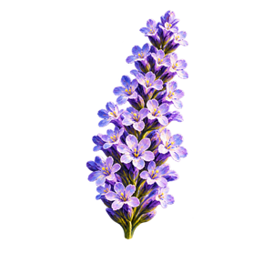
BG03 · LT03
ML_BG03_LT03_F09_Lavender_LightPurple_A_BudToBloom_KeyFFFF00_Review_v29.mp4
자연 개화·라이팅 최종 승인 전
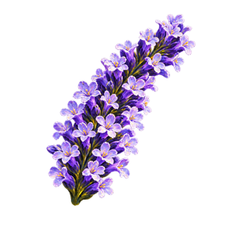
BG03 · LT03
ML_BG03_LT03_F10_Lavender_DeepPurple_B_BudToBloom_KeyFFFF00_Review_v29.mp4
자연 개화·라이팅 최종 승인 전
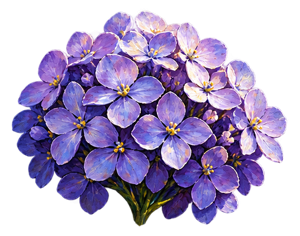
BG03 · LT03
ML_BG03_LT03_F11_Hydrangea_Lilac_A_BudToBloom_KeyFFFF00_Review_v29.mp4
자연 개화·라이팅 최종 승인 전
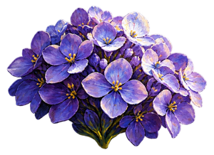
BG03 · LT03
ML_BG03_LT03_F12_Hydrangea_Purple_B_BudToBloom_KeyFFFF00_Review_v29.mp4
자연 개화·라이팅 최종 승인 전
| 요소 | 상태 | 파일명 |
|---|---|---|
| 밤 · 퍼플 · 배경만 | RuntimeBackground | ML_BG03_LT03_Background_Hallasan_4096_v19.png |
| 밤 · 퍼플 · 가로벽 배경 소스 | WallResolutionSource | ML_BG03_LT03_Background_Hallasan_Wall14165_v19.png |
| 밤 · 퍼플 · LightingReference | LightingReference | ML_BG03_LT03_Reference_IntegratedOil_v21.png |
| 밤 · 퍼플 · LayoutReferenceBloom | LayoutReferenceBloom | ML_BG03_LT03_Reference_ExhibitionBloom_v26.png |
| 밤 · 퍼플 · LayoutReferenceBud | LayoutReferenceBud | ML_BG03_LT03_Reference_ExhibitionBud_v26.png |
| 밤 · 퍼플 · 라벤더 A · 연보라 · 실제 Bud 입력 | Bud | ML_BG03_LT03_F09_Lavender_LightPurple_A_Bud_InputKeyFFFF00_v22.png |
| 밤 · 퍼플 · 라벤더 A · 연보라 · 원본 알파 Bud | Bud | ML_BG03_LT03_F09_Lavender_LightPurple_A_Bud_SourceAlpha_v14.png |
| 밤 · 퍼플 · 라벤더 A · 연보라 · 실제 Bloom 입력 | Bloom | ML_BG03_LT03_F09_Lavender_LightPurple_A_Bloom_InputKeyFFFF00_v23.png |
| 밤 · 퍼플 · 라벤더 A · 연보라 · 원본 알파 Bloom | Bloom | ML_BG03_LT03_F09_Lavender_LightPurple_A_Bloom_SourceAlpha_v23.png |
| 밤 · 퍼플 · 라벤더 A · 연보라 · 개화 검토 영상 | BudToBloom | ML_BG03_LT03_F09_Lavender_LightPurple_A_BudToBloom_KeyFFFF00_Review_v29.mp4 |
| 밤 · 퍼플 · 라벤더 B · 짙은 보라 · 실제 Bud 입력 | Bud | ML_BG03_LT03_F10_Lavender_DeepPurple_B_Bud_InputKeyFFFF00_v22.png |
| 밤 · 퍼플 · 라벤더 B · 짙은 보라 · 원본 알파 Bud | Bud | ML_BG03_LT03_F10_Lavender_DeepPurple_B_Bud_SourceAlpha_v14.png |
| 밤 · 퍼플 · 라벤더 B · 짙은 보라 · 실제 Bloom 입력 | Bloom | ML_BG03_LT03_F10_Lavender_DeepPurple_B_Bloom_InputKeyFFFF00_v23.png |
| 밤 · 퍼플 · 라벤더 B · 짙은 보라 · 원본 알파 Bloom | Bloom | ML_BG03_LT03_F10_Lavender_DeepPurple_B_Bloom_SourceAlpha_v23.png |
| 밤 · 퍼플 · 라벤더 B · 짙은 보라 · 개화 검토 영상 | BudToBloom | ML_BG03_LT03_F10_Lavender_DeepPurple_B_BudToBloom_KeyFFFF00_Review_v29.mp4 |
| 밤 · 퍼플 · 수국 A · 라일락 · 실제 Bud 입력 | Bud | ML_BG03_LT03_F11_Hydrangea_Lilac_A_Bud_InputKeyFFFF00_v22.png |
| 밤 · 퍼플 · 수국 A · 라일락 · 원본 알파 Bud | Bud | ML_BG03_LT03_F11_Hydrangea_Lilac_A_Bud_SourceAlpha_v18.png |
| 밤 · 퍼플 · 수국 A · 라일락 · 실제 Bloom 입력 | Bloom | ML_BG03_LT03_F11_Hydrangea_Lilac_A_Bloom_InputKeyFFFF00_v22.png |
| 밤 · 퍼플 · 수국 A · 라일락 · 원본 알파 Bloom | Bloom | ML_BG03_LT03_F11_Hydrangea_Lilac_A_Bloom_SourceAlpha_v14.png |
| 밤 · 퍼플 · 수국 A · 라일락 · 개화 검토 영상 | BudToBloom | ML_BG03_LT03_F11_Hydrangea_Lilac_A_BudToBloom_KeyFFFF00_Review_v29.mp4 |
| 밤 · 퍼플 · 수국 B · 보라 · 실제 Bud 입력 | Bud | ML_BG03_LT03_F12_Hydrangea_Purple_B_Bud_InputKeyFFFF00_v22.png |
| 밤 · 퍼플 · 수국 B · 보라 · 원본 알파 Bud | Bud | ML_BG03_LT03_F12_Hydrangea_Purple_B_Bud_SourceAlpha_v18.png |
| 밤 · 퍼플 · 수국 B · 보라 · 실제 Bloom 입력 | Bloom | ML_BG03_LT03_F12_Hydrangea_Purple_B_Bloom_InputKeyFFFF00_v22.png |
| 밤 · 퍼플 · 수국 B · 보라 · 원본 알파 Bloom | Bloom | ML_BG03_LT03_F12_Hydrangea_Purple_B_Bloom_SourceAlpha_v14.png |
| 밤 · 퍼플 · 수국 B · 보라 · 개화 검토 영상 | BudToBloom | ML_BG03_LT03_F12_Hydrangea_Purple_B_BudToBloom_KeyFFFF00_Review_v29.mp4 |
| 밤 · 퍼플 · 라벤더 잎 | Static | ML_BG03_LT03_G01_Leaf_v14.png |
| 밤 · 퍼플 · 수국 잎 | Static | ML_BG03_LT03_G02_Leaf_v14.png |
| 밤 · 퍼플 · 라벤더 긴 잎줄기 | Static | ML_BG03_LT03_G03_StemLeaves_v14.png |
| 밤 · 퍼플 · 수국 긴 잎줄기 | Static | ML_BG03_LT03_G04_StemLeaves_v14.png |
| 밤 · 퍼플 · 낮은 풀 | Static | ML_BG03_LT03_G05_Grass_v14.png |
| 밤 · 퍼플 · 긴 풀 | Static | ML_BG03_LT03_G06_Grass_v14.png |
| 밤 · 퍼플 · 현무암 1 | Static | ML_BG03_LT03_R01_Basalt_v14.png |
| 밤 · 퍼플 · 현무암 2 | Static | ML_BG03_LT03_R02_Basalt_v14.png |
| 밤 · 퍼플 · 현무암 3 | Static | ML_BG03_LT03_R03_Basalt_v14.png |
| 밤 · 퍼플 · 현무암 4 | Static | ML_BG03_LT03_R04_Basalt_v14.png |
| 밤 · 퍼플 · 큰 구름 | Static | ML_BG03_LT03_A01_Cloud_v23.png |
| 밤 · 퍼플 · 얇은 구름 | Static | ML_BG03_LT03_A02_Cloud_v23.png |
| 밤 · 퍼플 · 노랑 나비 | Static | ML_BG03_LT03_A03_Butterfly_v23.png |
| 밤 · 퍼플 · 파랑 나비 | Static | ML_BG03_LT03_A04_Butterfly_v23.png |
| 밤 · 퍼플 · 푸른 새 | Static | ML_BG03_LT03_A05_Bird_v23.png |
| 밤 · 퍼플 · 복숭아빛 새 | Static | ML_BG03_LT03_A06_Bird_v23.png |
| 밤 · 퍼플 · 추가 전경 grass | Static | ML_BG03_LT03_FG01_GrassPatch_v27.png |
| 밤 · 퍼플 · 추가 전경 rock | Static | ML_BG03_LT03_FG02_BasaltGrassPatch_v27.png |
왼쪽 낮은 금빛·복숭아빛 / 푸른 보랏빛 그림자
폴더: BG04_Morning_LT04_GoldLeft
통합 유화 · 라이팅 기준 이미지
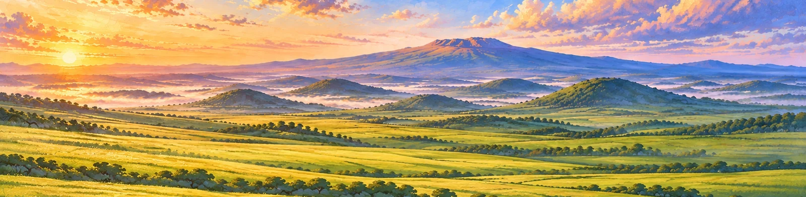
배경 파일: ML_BG04_LT04_Background_Hallasan_4096_v19.png
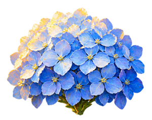
BG04 · LT04
ML_BG04_LT04_F13_Hydrangea_SkyBlue_A_BudToBloom_KeyFF8000_Review_v29.mp4
자연 개화·라이팅 최종 승인 전
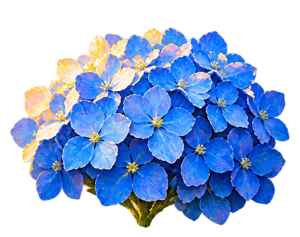
BG04 · LT04
ML_BG04_LT04_F14_Hydrangea_Blue_B_BudToBloom_KeyFF8000_Review_v29.mp4
자연 개화·라이팅 최종 승인 전
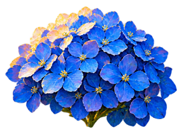
BG04 · LT04
ML_BG04_LT04_F15_Hydrangea_CobaltBlue_C_BudToBloom_KeyFF8000_Review_v29.mp4
자연 개화·라이팅 최종 승인 전
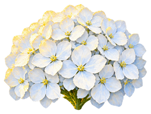
BG04 · LT04
ML_BG04_LT04_F16_Hydrangea_CoolWhite_D_BudToBloom_KeyFF8000_Review_v29.mp4
자연 개화·라이팅 최종 승인 전
| 요소 | 상태 | 파일명 |
|---|---|---|
| 아침 · 블루 · 배경만 | RuntimeBackground | ML_BG04_LT04_Background_Hallasan_4096_v19.png |
| 아침 · 블루 · 가로벽 배경 소스 | WallResolutionSource | ML_BG04_LT04_Background_Hallasan_Wall14165_v19.png |
| 아침 · 블루 · LightingReference | LightingReference | ML_BG04_LT04_Reference_IntegratedOil_v21.png |
| 아침 · 블루 · LayoutReferenceBloom | LayoutReferenceBloom | ML_BG04_LT04_Reference_ExhibitionBloom_v26.png |
| 아침 · 블루 · LayoutReferenceBud | LayoutReferenceBud | ML_BG04_LT04_Reference_ExhibitionBud_v26.png |
| 아침 · 블루 · 수국 A · 하늘색 · 실제 Bud 입력 | Bud | ML_BG04_LT04_F13_Hydrangea_SkyBlue_A_Bud_InputKeyFF8000_v22.png |
| 아침 · 블루 · 수국 A · 하늘색 · 원본 알파 Bud | Bud | ML_BG04_LT04_F13_Hydrangea_SkyBlue_A_Bud_SourceAlpha_v18.png |
| 아침 · 블루 · 수국 A · 하늘색 · 실제 Bloom 입력 | Bloom | ML_BG04_LT04_F13_Hydrangea_SkyBlue_A_Bloom_InputKeyFF8000_v22.png |
| 아침 · 블루 · 수국 A · 하늘색 · 원본 알파 Bloom | Bloom | ML_BG04_LT04_F13_Hydrangea_SkyBlue_A_Bloom_SourceAlpha_v14.png |
| 아침 · 블루 · 수국 A · 하늘색 · 개화 검토 영상 | BudToBloom | ML_BG04_LT04_F13_Hydrangea_SkyBlue_A_BudToBloom_KeyFF8000_Review_v29.mp4 |
| 아침 · 블루 · 수국 B · 파랑 · 실제 Bud 입력 | Bud | ML_BG04_LT04_F14_Hydrangea_Blue_B_Bud_InputKeyFF8000_v22.png |
| 아침 · 블루 · 수국 B · 파랑 · 원본 알파 Bud | Bud | ML_BG04_LT04_F14_Hydrangea_Blue_B_Bud_SourceAlpha_v18.png |
| 아침 · 블루 · 수국 B · 파랑 · 실제 Bloom 입력 | Bloom | ML_BG04_LT04_F14_Hydrangea_Blue_B_Bloom_InputKeyFF8000_v22.png |
| 아침 · 블루 · 수국 B · 파랑 · 원본 알파 Bloom | Bloom | ML_BG04_LT04_F14_Hydrangea_Blue_B_Bloom_SourceAlpha_v14.png |
| 아침 · 블루 · 수국 B · 파랑 · 개화 검토 영상 | BudToBloom | ML_BG04_LT04_F14_Hydrangea_Blue_B_BudToBloom_KeyFF8000_Review_v29.mp4 |
| 아침 · 블루 · 수국 C · 코발트블루 · 실제 Bud 입력 | Bud | ML_BG04_LT04_F15_Hydrangea_CobaltBlue_C_Bud_InputKeyFF8000_v22.png |
| 아침 · 블루 · 수국 C · 코발트블루 · 원본 알파 Bud | Bud | ML_BG04_LT04_F15_Hydrangea_CobaltBlue_C_Bud_SourceAlpha_v18.png |
| 아침 · 블루 · 수국 C · 코발트블루 · 실제 Bloom 입력 | Bloom | ML_BG04_LT04_F15_Hydrangea_CobaltBlue_C_Bloom_InputKeyFF8000_v22.png |
| 아침 · 블루 · 수국 C · 코발트블루 · 원본 알파 Bloom | Bloom | ML_BG04_LT04_F15_Hydrangea_CobaltBlue_C_Bloom_SourceAlpha_v14.png |
| 아침 · 블루 · 수국 C · 코발트블루 · 개화 검토 영상 | BudToBloom | ML_BG04_LT04_F15_Hydrangea_CobaltBlue_C_BudToBloom_KeyFF8000_Review_v29.mp4 |
| 아침 · 블루 · 수국 D · 흰색 · 실제 Bud 입력 | Bud | ML_BG04_LT04_F16_Hydrangea_CoolWhite_D_Bud_InputKeyFF8000_v22.png |
| 아침 · 블루 · 수국 D · 흰색 · 원본 알파 Bud | Bud | ML_BG04_LT04_F16_Hydrangea_CoolWhite_D_Bud_SourceAlpha_v18.png |
| 아침 · 블루 · 수국 D · 흰색 · 실제 Bloom 입력 | Bloom | ML_BG04_LT04_F16_Hydrangea_CoolWhite_D_Bloom_InputKeyFF8000_v22.png |
| 아침 · 블루 · 수국 D · 흰색 · 원본 알파 Bloom | Bloom | ML_BG04_LT04_F16_Hydrangea_CoolWhite_D_Bloom_SourceAlpha_v17.png |
| 아침 · 블루 · 수국 D · 흰색 · 개화 검토 영상 | BudToBloom | ML_BG04_LT04_F16_Hydrangea_CoolWhite_D_BudToBloom_KeyFF8000_Review_v29.mp4 |
| 아침 · 블루 · 수국 잎 | Static | ML_BG04_LT04_G01_Leaf_v14.png |
| 아침 · 블루 · 수국 잎 | Static | ML_BG04_LT04_G02_Leaf_v14.png |
| 아침 · 블루 · 수국 긴 잎줄기 | Static | ML_BG04_LT04_G03_StemLeaves_v14.png |
| 아침 · 블루 · 수국 긴 잎줄기 | Static | ML_BG04_LT04_G04_StemLeaves_v14.png |
| 아침 · 블루 · 낮은 풀 | Static | ML_BG04_LT04_G05_Grass_v14.png |
| 아침 · 블루 · 긴 풀 | Static | ML_BG04_LT04_G06_Grass_v14.png |
| 아침 · 블루 · 현무암 1 | Static | ML_BG04_LT04_R01_Basalt_v14.png |
| 아침 · 블루 · 현무암 2 | Static | ML_BG04_LT04_R02_Basalt_v14.png |
| 아침 · 블루 · 현무암 3 | Static | ML_BG04_LT04_R03_Basalt_v14.png |
| 아침 · 블루 · 현무암 4 | Static | ML_BG04_LT04_R04_Basalt_v14.png |
| 아침 · 블루 · 큰 구름 | Static | ML_BG04_LT04_A01_Cloud_v23.png |
| 아침 · 블루 · 얇은 구름 | Static | ML_BG04_LT04_A02_Cloud_v23.png |
| 아침 · 블루 · 노랑 나비 | Static | ML_BG04_LT04_A03_Butterfly_v23.png |
| 아침 · 블루 · 파랑 나비 | Static | ML_BG04_LT04_A04_Butterfly_v23.png |
| 아침 · 블루 · 푸른 새 | Static | ML_BG04_LT04_A05_Bird_v23.png |
| 아침 · 블루 · 복숭아빛 새 | Static | ML_BG04_LT04_A06_Bird_v23.png |
| 아침 · 블루 · 추가 전경 grass | Static | ML_BG04_LT04_FG01_GrassPatch_v27.png |
| 아침 · 블루 · 추가 전경 rock | Static | ML_BG04_LT04_FG02_BasaltGrassPatch_v27.png |